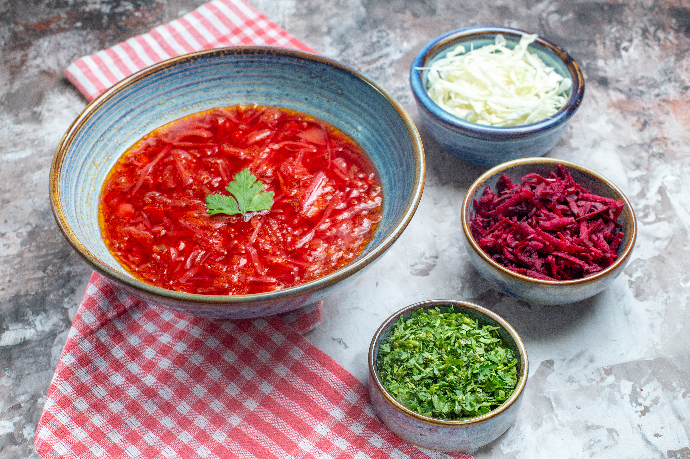

Bortsch ukrainien
Le véritable bortsch ukrainien est une soupe épaisse au goût prononcé de viande et à la fraîcheur vive de la betterave. Sa couleur et son arôme ne sont pas le fruit du hasard : les betteraves sont cuites séparément avec de l'acide, les légumes sont frits dans du saindoux ou de l'huile, et le bouillon mijote longuement à feu doux.
Lorsque tous les ingrédients sont enfin réunis, le bortsch développe un goût complexe : nourrissant, légèrement sucré, un peu acidulé et étonnamment harmonieux. La crème fraîche et l'ail ne sont pas ici des garnitures, mais la touche finale.
| Ingrédients | Poids du produit (g) |
|---|---|
| Betterave | 150 |
| Chou frais | 100 |
| Pomme de terre | 213 |
| Carotte | 50 |
| Oignon | 36 |
| Ail | 4 |
| Purée de tomates | 30 |
| Farine de blé | 6 |
| Saindoux (Salo) | 10 |
| L'huile de tournesol | 20 |
| Sucre | 10 |
| Vinaigre à 3% | 10 |
| Poivron doux | 27 |
| Bouillon | 700 |
| Rendement | 1000 |
Technologie de préparation :
- Râper ou couper en fines lamelles la betterave, ajouter le vinaigre, la graisse, le sucre, la purée de tomates et faire mijoter jusqu'à ce qu'elles soient cuites (environ 10 minutes) en ajoutant un peu de bouillon.
- Faire suer les carottes hachées et les oignons coupés en demi-rondelles dans la graisse.
- Ajouter les pommes de terre coupées en tranches au bouillon bouillant, porter à ébullition, ajouter le chou émincé et laisser cuire 10 à 15 minutes.
- Ajouter ensuite les betteraves mijotées et les légumes sautés et faites cuire à feu doux pendant environ 5 à 7 minutes.
- Diluer la farine sautée dans le bouillon ou l'eau, le poivre doux, le sel et les épices et faites cuire à feu doux pendant environ 5 minutes.
- Éteignez le feu et laissez reposer le bortsch pendant 10 à 20 minutes.
Avant de servir, assaisonnez le bortsch de betteraves avec du lard haché et de l'ail. Il est recommandé de servir le bortsch avec du bœuf ou du porc. Vous pouvez également servir des beignets à l'ail en accompagnement.
Lien vers une recette alternative :
https://youtu.be/ur_lfpcwjAY?si=29abYa4-vPnAjvXLVous pouvez activer les sous-titres dans la langue de votre choix.